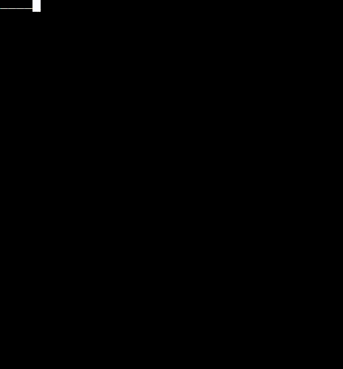

22 Jul 2021

(git repo) (original project that this is modified from)
I wanted to learn to work with ZIO because the job I’m hoping to start uses it heavily. Their code base also has some Cats Effect code. My goal here was to port this Cats-based FP Tetris console game to a ZIO-based console game. This is a daily log of the progress, hurdles, and thoughts.
I’ll start by just trying to get all piece shapes back in the game. When debugging, I cound this fragment:
val allPossiblePieces: Seq[RectRegion] =
// is this a monoid?
def multF[A](f: A => A)(times: Int): A => A =
(1 to times).foldLeft(identity[A](_))((c, _) => c andThen f)
The comment “is this a monoid?” tells me I’m in a good place, because it shows me the original writer understands these concepts just a little better than I do, so hopefully this excersise will push me to their level.
(I later scrapped the tetris idea and decided to tear it down further and make the snake game)
Porting a lot of the project was much more straight forward than I thought it’d be. I spent time reading ZIO and Cats docs, and testing out some Cats types / methods to understand how they work. The ZIO discord was invaluable to help with my newbie questions.
In the following, the State[Ansi, Unit] type and traverse method are from Cats libraries. I wanted to convert it to ZIO.
def printAt(x: Int, y: Int, s: String): State[Ansi, Unit]
def printLinesAt(x: Int, y: Int, lines: Vector[String]): State[Ansi, Unit] =
for {
x <- lines.zipWithIndex.traverse
{ case (line, idx) => printAt(x + idx, y, line) }
} yield x.map(_ => Unit)
Which resulted in this (complements to @adamfraser on discord):
type DrawCommand = State[Ansi, Unit]
def printLinesAt(x: Int, y: Int, lines: Vector[String]): State[Ansi, Unit] =
for {
_ <- lines.zipWithIndex.forEach
{ case (line, idx) => printAt(x + idx, y, line) }
} yield ()
This uses State from zio.prelude.
This code is nearly identical to the original, but I had trouble understanding how the State return type was built up here, and how the result of the ‘lines.zipWithIndex.forEach…..’ computed value was was not thrown away with the underscore and just yielding unit. This slideshow was super valuable, and the confusion can be simplified by painstakingly desugarring the for comprehension and State flatMap / map definitions. Ultimitaly, map and flatMap are defined in a less immediately intuitive way for State compared to the more familiar List, Option, and Either monads.
After the snake eats food, you need a new food position, ideally a random position. With the software structure from the tetris game, namely the function to compute the next state from the current one, I was having difficulty using ZIO[Random, …, …] like I had in previous ZIO exersize projects. Because I had the infrastructure of streams already baked into the ‘next state’ functionality, I decided that instead of just a timed tick, I’d stream a new random position each tick, and only use the position if the snake ate food.
// Random food
val foodStream: ZStream[Random, Nothing, Food] =
ZStream.repeatEffect {
for {
x <- nextIntBounded(width)
y <- nextIntBounded(height)
} yield Food(Position(x,y))
}
// Regular ticks
val tick: ZStream[Clock, Nothing, Unit] =
ZStream.tick(125.millis)
// Timed Food
val tickedFood: ZStream[Clock with Random, Nothing, Food] =
tick.zip(foodStream).map(x => x._2)
// User's interactions
val userMoves: ZStream[Console, IOException, UserAction] =
interactions.map(x => UserAction(x))
// merge them
val allEvents: ZStream[Console with Clock with Random, IOException, Event] =
tickedFood merge userMoves
val states: ZStream[Console with Clock with Random, IOException, GameState] =
allEvents.scan(initialState)(nextState)
states.takeWhile(_.direction != false)
I’m not sure if this is more or less efficient than doing an IO random call only when needed (when the snake ate food). I don’t know enough about how streams work. If any stream that can be precomputed precomputes with a lot of values, it might be more efficient than doing ‘random IO’ only when needed. Regardless, it probably doesn’t matter at all for this app, and it’s prematurely optimizing. But it’s fun to think about!
Now the game is largely feature complete. It’s not a full snake game, because it never ends and you never lose, but it’s all ported to ZIO, which was my main learning goal.